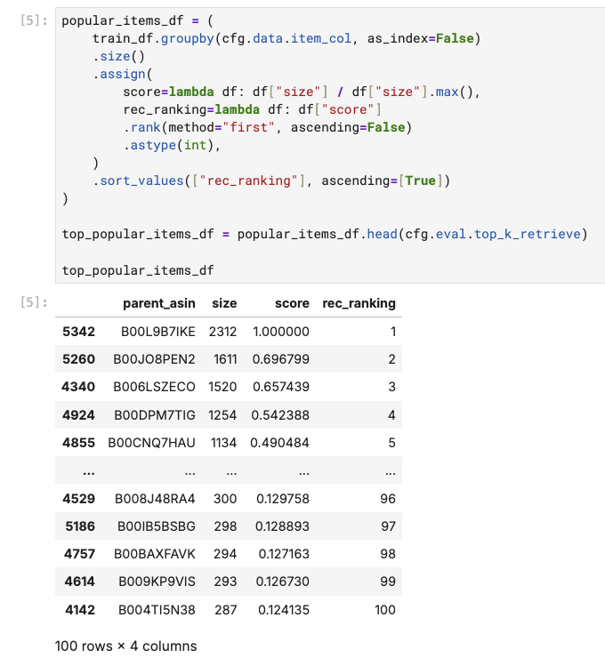
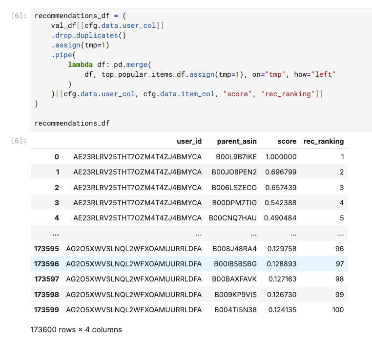
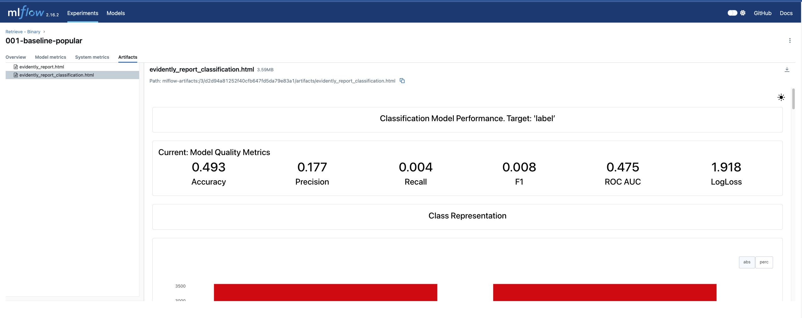
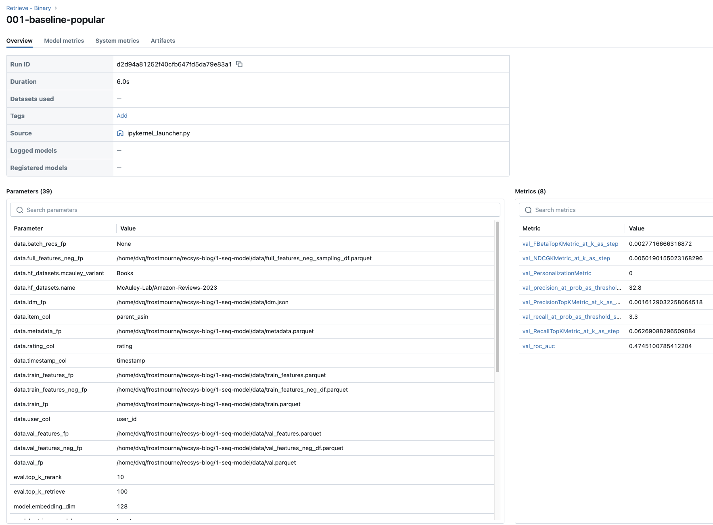

This is the fourth chapter of the tutorial series: Implement a RecSys.
Introduction
In Chapter 3, inspired by how Word2Vec cleverly samples out-of-context words to train its language model, we implemented our own popularity-based sampling strategy to generate negative samples for our training dataset. Now we’re ready to tackle one of the most critical aspects of any ML project: evaluation.
We will discuss building our evaluation framework, setting up MLflow for experiment tracking, and implementing a popularity-based baseline model to illustrate the end-to-end process. A solid measuring foundation provides the groundwork for systematic model development—you’ll use these tools throughout all your different attempts at improving the model performance.
All code for this chapter is available in the notebooks/010-baseline-popular.ipynb file and the src/eval/ directory in the project repository.
The Challenges of Evaluation in Recommendation Systems
Recommendation systems are notoriously tricky to evaluate. Unlike classification problems where accuracy is straightforward, the most significant challenge originates from the fact that RecSys has its root from information retrieval—where we essentially try to rank items. The issue comes when your new model produces a new ranking, but we don’t really know how users would react to this alternative ranking unless we deploy it in production. This makes offline evaluation feel quite limited for gauging real-world performance.
You may ask: Why don’t just run online experiment for any idea we have? Because they are typically expensive and slow. Methods like A/B tests in general require real users, real traffic, and real time to see if your changes work. So to iterate quickly on your backlog of a hundred different ideas, we don’t really have any other choices rather than resorting to offline evaluation as our development tool. That assumes, of course, that getting scores on old data actually points you towards better real-world models.
If you ask me how I navigate through all these sorts of uncertainties, here’s my take: if your offline metrics show clear improvements, that’s a good sign to move forward. If they show no change but you have strong reasons to believe your improvements are effective, don’t let that stop you from running an online experiment. Sometimes the best ideas don’t show up in offline metrics until they meet real users. Just make sure you can roll back quickly if you see significant drops in the early days.
Beyond this counterfactual challenge, recommendation systems must also struggle with implicit feedback where users rarely provide explicit ratings, ranking quality where the order of recommendations matters as much as the items themselves, personalization where a perfect recommendation for one user might be terrible for another, and temporal dynamics where user preferences evolve over time. In short, recommendations involve nuanced concepts of relevance, satisfaction, and utility that resist simple measurement.
To address these challenges, we need a comprehensive evaluation framework that can measure multiple aspects of recommendation quality. For the scope of this tutorial, we would be focusing on measuring both the ranking quality and the classification quality of the recommendations, while leaving the problem of counterfactual evaluation for a future post perhaps1.
All in all, we’ll focus on offline evaluation because it lets us iterate fast and learn the fundamentals. But important message worths repeating—the real test happens when your recommendations meet actual users.
Evaluation Metrics for Recommendation Systems
There are plenty of great posts diving into the details of these metrics so I would just briefly mention them here. Our evaluation framework implements several key metrics:
Ranking Metrics
- Precision@K: What fraction of top-K recommendations are relevant?
- Recall@K: What fraction of relevant items appear in top-K recommendations?
- NDCG@K: Normalized Discounted Cumulative Gain—rewards relevant items appearing higher in the ranking
Diversity Metrics
- Personalization: Measures how different recommendations are across users (higher is better)
Classification Metrics
- ROC-AUC: Area under the ROC curve for binary relevance prediction
- Precision-Recall curves: Trade-offs between precision and recall at different thresholds
Why classification metrics? Isn’t this a ranking problem? Well, the answer is yes and no. Essentially the choice of modeling approach is up to us, but there is one valid approach in which we would formulate the problem as predicting whether a user would interact with an item or not. As the output of this model would normally be a score between 0 and 1, we can then use the ROC-AUC to evaluate how well a model is able to rank the relevant items higher that the irrelevant ones, which is a form of ranking quality in and of itself. The other main benefit for using ROC-AUC is that it’s also a built-in metric for almost all ML frameworks, which makes it easy to measure without the need to implement it from scratch (lazy person saying).
If you wish to learn more, I suggest checking out this post by Amit Chaudhary and the Evidently documentation on Ranking metrics.
The baseline recommender system
To demonstrate how we evaluate a model, let’s first build a baseline one for easier illustration. This will serve as a sanity check for our evaluation framework and provide a performance benchmark for more complex models to beat.
If you have followed the README instructions (see Chapter 1), you should have already started MLflow. If not, you can start it by running the following command:
make ml-platform-up && make ml-platform-logsIn the world of RecSys, the most popular base line is “popular” recommender (pun intended). It’s simple, fast, easy to implement, easy to understand for users, and sometimes quite effective, especially compared to the effort required to put up.
To get the most popular items, we only need a few lines of Pandas code to group by item and count the number of interactions: 
Then, for each of the user in our validation set, we can simply assign the most popular items to them: 
That’s it. We now have recommendations provided for our users. Now we can move to the actual evaluation part.
How We Set Up Evaluation for our Project
We need to align the recommendations with the ground truth labels. The src/eval/utils.py module provides two functions for this purpose:
src/eval/utils.py
from src.eval import (
create_label_df, # Create ground truth labels
merge_recs_with_target, # Merge recommendations with labels
)
def create_label_df(df, user_col, item_col, rating_col, timestamp_col):
"""
Creates a ranking of items for each user based on their ratings and interaction timestamps, providing the ground truth for evaluation.
"""
label_cols = [user_col, item_col, rating_col, "rating_rank"]
label_df = (
df.sort_values([timestamp_col], ascending=[False])
.assign(
rating_rank=lambda df: df.groupby(user_col)[rating_col].rank(
method="first", ascending=False
)
)
.sort_values(["rating_rank"], ascending=[True])[label_cols]
)
return label_df
def merge_recs_with_target(recs_df, label_df, user_col, item_col, rating_col, k=10):
"""
Align your model's recommendations with the ground truth and handling cases where recommended items don't appear in the validation set.
"""
return (
recs_df.pipe(
lambda df: pd.merge(
df, label_df[[user_col, item_col, rating_col, "rating_rank"]],
on=[user_col, item_col], how="outer"
)
)
.assign(
rating=lambda df: df[rating_col].fillna(0).astype(int),
# Fill the recall with ranking = top_k_retrieve + 1 so that the recall calculation is correct
rec_ranking=lambda df: df["rec_ranking"].fillna(k + 1).astype(int),
)
.sort_values([user_col, "rec_ranking"])
)Metric Logging with Evidently
The src/eval/log_metrics.py module uses the Evidently library to compute and log comprehensive metrics:
src/eval/log_metrics.py
def log_ranking_metrics(cfg: Config, eval_df):
"""
Compute and log ranking metrics using Evidently.
Automatically integrates with MLflow for experiment tracking.
"""
column_mapping = ColumnMapping(
recommendations_type="rank",
target=cfg.data.rating_col,
prediction="rec_ranking",
item_id=cfg.data.item_col,
user_id=cfg.data.user_col,
)
report = Report(
metrics=[
NDCGKMetric(k=cfg.eval.top_k_rerank),
RecallTopKMetric(k=cfg.eval.top_k_retrieve),
PrecisionTopKMetric(k=cfg.eval.top_k_rerank),
FBetaTopKMetric(k=cfg.eval.top_k_rerank),
PersonalizationMetric(k=cfg.eval.top_k_rerank),
]
)
report.run(reference_data=None, current_data=eval_df, column_mapping=column_mapping)
# Automatically log to MLflow if configured
if cfg.run.log_to_mlflow:
mlflow.log_artifact(evidently_report_fp)
# Log individual metrics for easy comparison
for metric_result in report.as_dict()["metrics"]:
# ... metric logging logic
return reportThere is also a log_classification_metrics function that follows the similar pattern, but for the task of evaluation classification accuracy.
The output is we have HTML report like this:

Do you notice that those report files are available in a nice web-based UI? If you are not familiar with MLflow, the next section will explain.
Experiment Tracking with MLflow
Machine learning development is fundamentally an iterative process—the more ideas we systematically test, the better our chances of discovering meaningful improvements. This iterative nature means we’re constantly cycling through hypotheses: trying new features, adjusting hyperparameters, experimenting with different architectures, and refining our approach based on results.
To maximize this exploration while maintaining scientific rigor, we need more than just robust evaluation metrics; we need a convenient way to track every experiment, compare results across iterations, and easily revisit previous approaches. Comprehensive experiment logging creates a safety net that encourages bold experimentation—when you know you can reproduce any previous result or quickly understand what changed between runs, you’re more willing to try ambitious ideas that might not work. This psychological safety accelerates the entire development cycle.
There are often no restrictions on how you should track your experiments. Even manually keeping things in a spreadsheet works just fine. Based on my own experience, I feel like MLflow is the most convenient way though, since this tool is mature and well-integrated with other ML frameworks. It also offers other fundamental capabilities like model registry which becomes very handy when we talk about model serving and deployment.
As MLflow should be enabled in our every model training run, I put most of the MLflow integration implementation in our configuration code:
from src.cfg import ConfigLoader
# Load configuration and initialize MLflow
cfg = ConfigLoader("../cfg/common.yaml")
cfg.run.run_name = "001-baseline-popular"
cfg.run.experiment_name = "Retrieve - Binary"
cfg.init()The cfg.init() method handles all the MLflow setup:
from lightning.pytorch.loggers import MLFlowLogger
class ConfigLoader:
# ...
def init(self):
"""Initialize MLflow experiment tracking automatically."""
if self.run.log_to_mlflow:
logger.info(f"Setting up MLflow experiment {self.run.experiment_name}...")
mlflow.set_experiment(self.run.experiment_name)
mlflow.start_run(run_name=self.run.run_name)
self._mlf_logger = MLFlowLogger(
experiment_name=self.run.experiment_name,
run_id=mlflow.active_run().info.run_id,
tracking_uri=mlflow_uri,
log_model=True,
)
return self- 1
- Note that MLFlowLogger here is a PyTorch Lightning logger, which we would use later when defining our PyTorch Lightning model for logging our model training progress.
In the end of our run, we can call this method cfg.log_config_to_mlflow() to log all parameters to MLflow:
def log_config_to_mlflow(self):
"""Log all configuration parameters to MLflow with dot notation."""
flat_config = flatten_dict(self.config.model_dump())
for key, value in flat_config.items():
mlflow.log_param(key, value) # e.g., "train.learning_rate": 0.01The result is we can access our experiment parameters like this:

If for some reasons we don’t want to log your run to MLflow e.g. when we starts to develop our notebook, we can easily control this behavior by setting the log_to_mlflow flag to false in our configuration file:
# cfg/common.yaml
run:
log_to_mlflow: true
experiment_name: "Retrieve - Binary"At this point, you’ve got a working popularity-based recommender, a full offline evaluation pipeline, and MLflow tracking wired into your runs. With those pieces in place, you can safely try out new ideas, compare experiments side by side, and roll back if something goes sideways.
Recap
In this chapter, we established the critical evaluation infrastructure that will power your recommendation system development. Here’s what we covered:
- The fundamental evaluation challenges: We explored why recommendation systems are uniquely difficult to evaluate, mostly from the angle of counterfactual problem (we only see what users actually encountered) which makes simple accuracy metrics inadequate.
- Online vs offline evaluation strategy: We established the principle that while online metrics are the ultimate business goal, offline evaluation serves as our rapid iteration tool. The key insight: offline improvements don’t always translate to online wins, but they provide essential guidance for systematic development.
- Comprehensive evaluation metrics: We implemented a multi-dimensional framework using Evidently that captures ranking quality (Precision@K, Recall@K, NDCG@K), diversity (Personalization), and classification performance (ROC-AUC, Precision-Recall curves). We also justified why classification metrics make sense for recommendation systems when framed as binary relevance prediction.
- Popularity-based baseline implementation: We built our first recommender system—a simple but effective popularity-based model that assigns the most frequently interacted items to all users. This baseline serves as our performance benchmark and validates that our evaluation pipeline works correctly.
- MLflow experiment tracking integration: We created a configuration-driven system that automatically handles experiment setup, parameter logging, and artifact storage. This infrastructure encourages bold experimentation by providing the safety net of full reproducibility.
All code for this chapter is available in the notebooks/010-baseline-popular.ipynb file and the src/eval/ directory in the project repository.
What’s Next
In Chapter 5, we’ll build on this foundation to implement session-based recommendation models that can capture temporal patterns in user behavior. The evaluation framework you’ve built here will be essential for measuring whether these more complex models actually improve upon our simple baseline. And if the our evaluation setup does a good job, the results would be hard to miss:

As you can see, MLflow helps comparing model iterations easily 😉.
Continue to the next chapter.
If you find this tutorial helpful, please cite this writeup as:
Quy, Dinh. (May 2025). Implement a RecSys, Chapter 4:
Offline Evaluation, MLflow Experiment Tracking, and Baseline Implementation. dvquys.com. https://dvquys.com/projects/implement-recsys/c4/.
Footnotes
You may take a look at this writing Counterfactual Evaluation for Recommendation Systems to learn more.↩︎